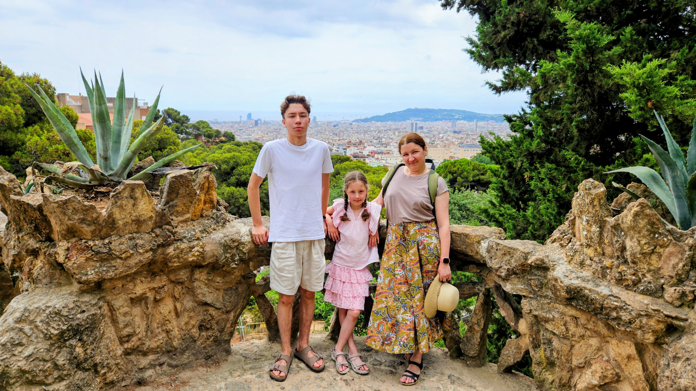
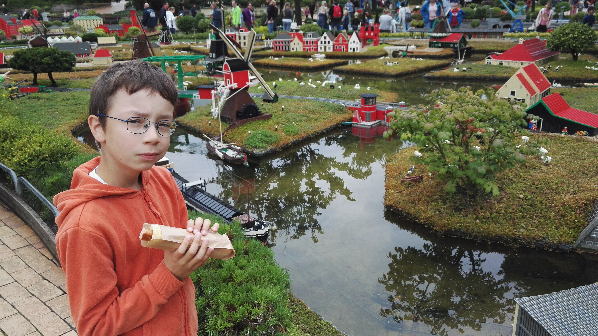
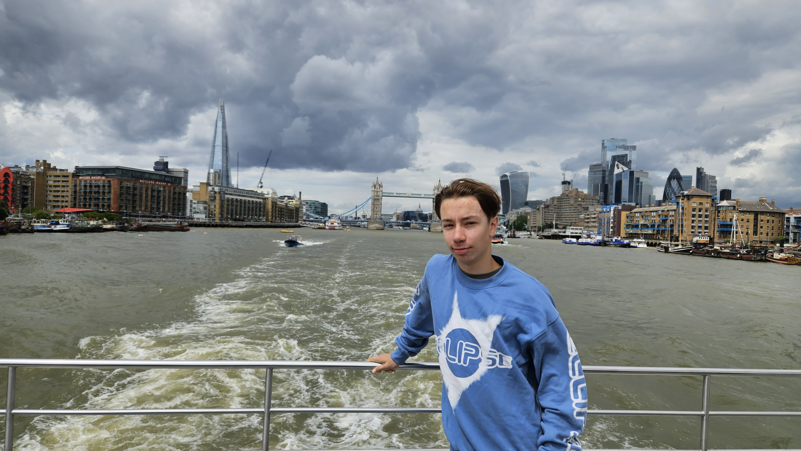
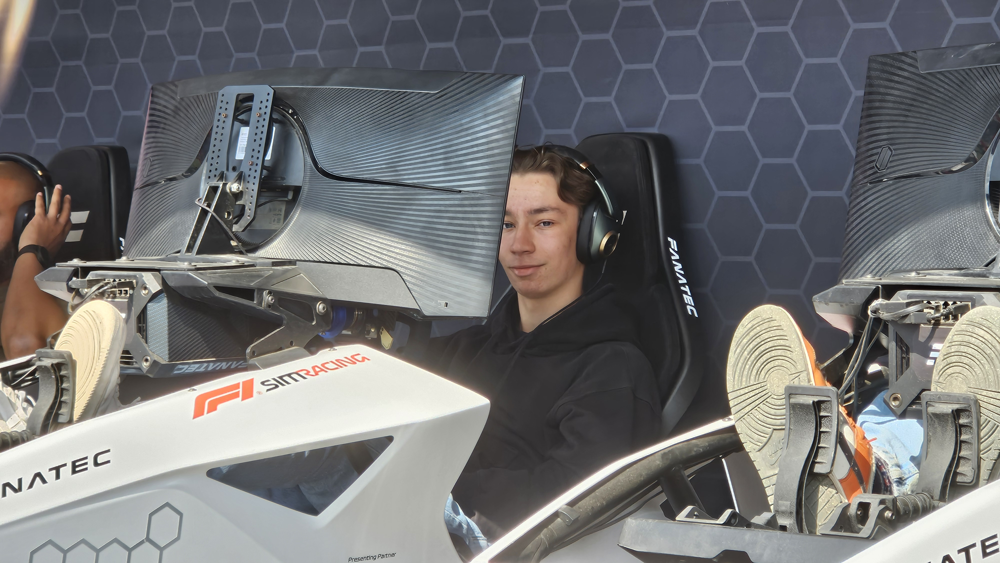
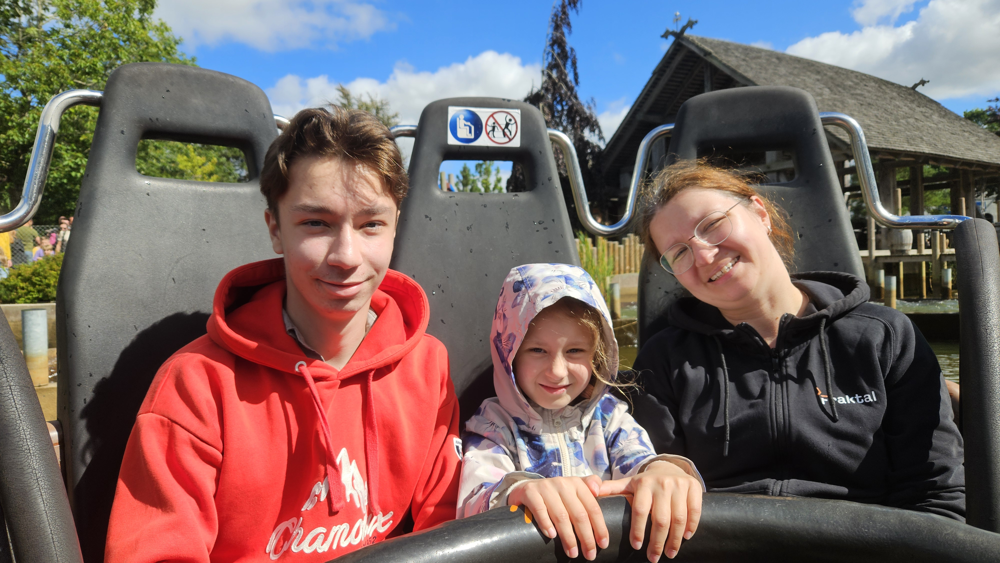

Her har jeg vært flere ganger i løpet av livet, men dette var sist gang for bare ett år siden. Jeg koste meg veldig her selvom det ble veldig varmt, og akkurat denne gangen fikk jeg prøvd å snakke litt spansk med andre folk der når jeg trengte det.
Jeg var her for første gang i 2018 og på dette bildet spiser jeg "French hotdog" for første gang. Det var utrolig godt og jeg har fortsatt ikke funnet en like god pølse noe sted siden dette.


Her var det mye å gjøre og mange fine steder. Jeg koste meg masse her og drar gjerne tilbake en gang i fremtiden.

Dette er fra sist gang jeg var der i 2024 og så formel 1 løp. Der fikk jeg prøvd en simulator som du ser på bildet. Det var veldig gøy her og jeg sier ikke nei til å komme tilbake en gang til. Dette er et godt minne for meg.

Her er et bilde av meg i Liseberg i Gøteborg. Jeg er veldig glad i fornøyelsesparker og dette er en av de beste jeg har vært i. Det var imidlertid gøyere første gangen jeg var i denne parken.